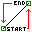

Generate gradual morphing from one entity to another
- open tool dialog
- pick first entity
- pick second entity
- adjust settings (first of all desired 'morphing' steps count)
- apply settings to generate 'Blend' object
- use 
speed button inside tool dialog to reverse(flip) first or second entity (it helps to achieve more smooth morphing result)
Modify any of two initial entities to rebuild result object.
All objects, generated using 'LSS Toolbar' has common post processing capabilities:
- 'Refresh' command rebuilds generated results manually
- 'Observe Changes' command enables instant refreshing after move/scale events
- 'Properties' command provides re-adjustment of initially entered settings any time later after object creation
View 'Commands' section of LSS Toolbar
'Help Index' for more information about post processing capabilities.